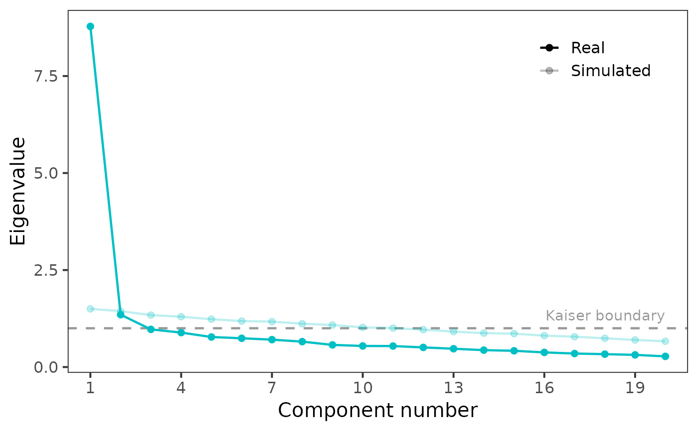

Computes the eigenvalues of the sample correlation matrix and the eigenvalues obtained from a random correlation matrix for which no factors/components are assumed. By default, the function utilizes a modified Horn's (1965) method, which – instead of mean – uses 95th percentile of each item eigenvalues sampling distribution as a threshold to find the optimal number of factors/components.
Usage
fa_parallel(
Data,
cor = "pearson",
n_obs = NULL,
method = "pca",
threshold = "quantile",
p = 0.95,
n_iter = 20,
plot = TRUE,
show_kaiser = TRUE,
fm = "minres",
use = "pairwise",
...
)Arguments
- Data
data.frame or matrix, dataset (where rows are observations and columns items) or correlation matrix (recognized automatically).
- cor
character, how to calculate the correlation matrix of the real data. Can be either
pearson(default),tetrachoricorpolychoric. Unambiguous abbreviations accepted.- n_obs
integer, in case you provided the correlation matrix directly as the input, you have to provide the number of observations in the original dataset.
- method
character, either
fa,pca, orboth(the default). Which method to use for the eigenvalues simulation and computation.- threshold
character, whether to use traditionall Horn's method or more recent and well-performing quantile one. Either
meanorquantile(default). Can be abbreviated.- p
numeric (0–1), probability for which the sample quantile is produced. Defaults to
.95. Ignored ifthreshold = "mean".- n_iter
integer, number of iterations, i.e. the number of zero-factor multivariate normal distributions to sample. Defaults to
20.- plot
logical, if
TRUE(the default), show the plot along with the function results. To create the plot from the resulting object afterwards, callplot().- show_kaiser
logical, whether to show Kaiser boundary in the plot (the default) or not.
- fm
character, factoring method. See
psych::fa()from the packagepsych::psych().- use
an optional character string giving a method for computing covariances in the presence of missing values. This must be (an abbreviation of) one of the strings "everything", "all.obs", "complete.obs", "na.or.complete", or "pairwise.complete.obs".
- ...
Arguments passed on to
psych::polychoriccorrectCorrection value to use to correct for continuity in the case of zero entry cell for tetrachoric, polychoric, polybi, and mixed.cor. See the examples for the effect of correcting versus not correcting for continuity.
smoothif TRUE and if the tetrachoric/polychoric matrix is not positive definite, then apply a simple smoothing algorithm using cor.smooth
globalWhen finding pairwise correlations, should we use the global values of the tau parameter (which is somewhat faster), or the local values (global=FALSE)? The local option is equivalent to the polycor solution, or to doing one correlation at a time. global=TRUE borrows information for one item pair from the other pairs using those item's frequencies. This will make a difference in the presence of lots of missing data. With very small sample sizes with global=FALSE and correct=TRUE, the function will fail (for as yet underdetermined reasons.
weightA vector of length of the number of observations that specifies the weights to apply to each case. The NULL case is equivalent of weights of 1 for all cases.
progressShow the progress bar (if not doing multicores)
MLML=FALSE do a quick two step procedure, ML=TRUE, do longer maximum likelihood — very slow! Deprecated
deleteCases with no variance are deleted with a warning before proceeding.
max.catThe maximum number of categories to bother with for polychoric.
Value
An object of class data.frame and sia_parallel. Can be
plotted using plot().
Details
Horn proposed a solution to the problem of optimal factor number identification using an approach based on a Monte Carlo simulation.
First, several (20 by default) zero-factor p-variate normal
distributions (where p is the number of columns) are obtained, and
p × p correlation matrices are computed for them. Eigenvalues
of each matrix is then calculated in order to get an eigenvalues sampling
distribution for each simulated variable.
Traditionally, Horn obtains an average of each sampling distribution and these averages are used as a threshold which is compared with eigenvalues of the original, real data. However, usage of the mean was later disputed by Buja & Eyuboglu (1992), and 95th percentile of eigenvalues sampling distribution was suggested as a more accurate threshold. This, more recent method is used by default in the function.
References
Horn, J. L. (1965). A rationale and test for the number of factors in factor analysis. Psychometrika, 30, 179–185. doi:10.1007/BF02289447
Buja, A., & Eyuboglu, N. (1992). Remarks on parallel analysis. Multivariate Behavioral Research, 27, 509–540. doi:10.1207/s15327906mbr2704_2
Author
Jan Netik
Institute of Computer Science of the Czech Academy of Sciences
netik@cs.cas.cz
Patricia Martinkova
Institute of Computer Science of the Czech Academy of Sciences
martinkova@cs.cas.cz
Examples
fa_parallel(TestAnxietyCor, n_obs = 335, method = "pca")
#> The input was recognized as a correlation matrix.
#> Assuming 335 observations in the original data.

#> According to the parallel analysis, the optimal number of principal components is 1.
#> Following the Kaiser rule, 2 components are recommended.
if (FALSE) { # \dontrun{
data("bfi", package = "psych")
items <- bfi[, 1:25]
fa_parallel(items)
fa_parallel(items, threshold = "mean") # traditional Horn's method
} # }